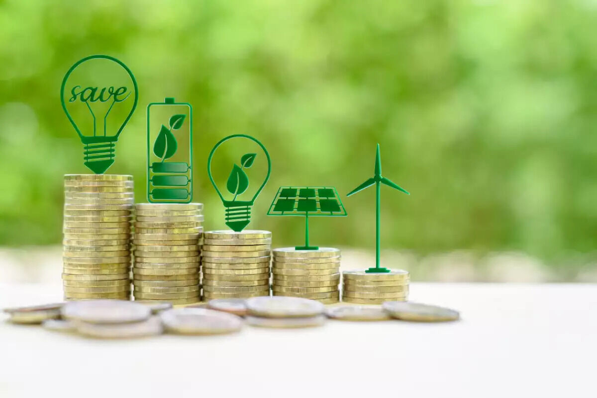

Cuatro datos alcanzan para saber qué preguntas hacer después.
El consumo total por sí solo no alcanza. El sector, el peso de la factura y cuánto consumo ocurre durante horas solares ayudan a identificar si conviene estudiar autoconsumo, almacenamiento, eficiencia o continuidad.

Tu perfil puede justificar un estudio más profundo.
*Rango heurístico para orientar el diagnóstico. No contempla curva de carga, tarifa, potencia, irradiancia, superficie, orientación, sombras, pérdidas, tecnología, financiación, impuestos ni ingeniería. No constituye cotización, ahorro garantizado ni dimensionamiento.
Revisar el perfil con EcoriseDatos reales
Facturas, perfil de consumo y contexto operativo convierten una estimación general en una hipótesis técnica útil.
Escenarios comparables
No toda empresa necesita la misma potencia, almacenamiento o arquitectura. Conviene comparar opciones bajo las mismas condiciones.
Decisión informada
El objetivo es entender qué inversión tiene sentido, qué incertidumbres quedan y qué datos hacen falta para resolverlas.
Una cifra no reemplaza una curva de carga.
Cuando la oportunidad es interesante, el paso siguiente es mirar facturación, horarios, cargas críticas, infraestructura y planes de crecimiento.
Pasá de la estimación al diagnóstico.
Coordiná una conversación con Ecorise para revisar el contexto y decidir si vale la pena avanzar.
Agendar diagnóstico